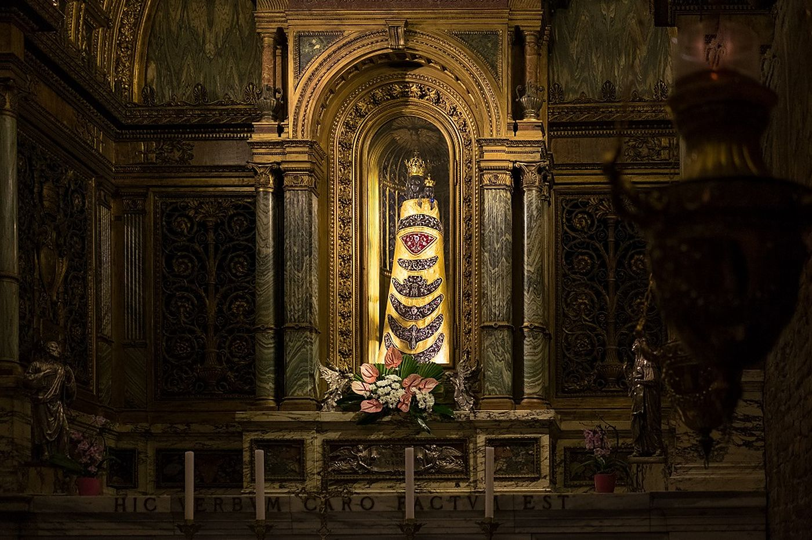

IVE a Torino
La comunità
Amici e terziari dell'IVE, dopo la partenza dei padri.
Chi siamo
Una famiglia religiosa, e i laici che la portano nel cuore
L'Istituto del Verbo Incarnato è una famiglia religiosa della Chiesa cattolica, presente in diversi paesi. A Torino ha animato per anni la parrocchia di Maria Madre della Chiesa: qui i padri hanno celebrato, confessato, accompagnato famiglie e giovani.
Il nome dice il programma: il Verbo si è fatto carne. Per questo la spiritualità dell'Istituto passa dalle cose concrete — l'Eucaristia, le persone, il lavoro, la casa — e non da un'idea astratta. È la stessa spiritualità che i terziari cercano di vivere nel mondo, nelle proprie famiglie e nei propri lavori.
Da settembre 2025 i padri non sono più a Torino: la Famiglia Religiosa ha lasciato la diocesi. La comunità laicale che si era formata attorno a loro non si è sciolta. Continua a ritrovarsi, tiene viva l'Adorazione del venerdì, prega per i sacerdoti e i seminaristi dell'Istituto e chiede al Cardinale Repole che possano tornare.
Che cosa trovi qui
- L'Adorazione eucaristica del venerdì, con il calendario e i turni
- Gli orari della chiesa di Maria Madre della Chiesa
- La preghiera per i padri e i seminaristi dell'Istituto
- Gli incontri e le iniziative aperte a tutti
- La petizione dei fedeli laici per il ritorno dell'IVE in diocesi
La patrona
Maria Santissima di Loreto
La comunità è affidata a Maria Santissima di Loreto. La Santa Casa venerata nel santuario marchigiano è, secondo la tradizione, la casa di Nazareth dove l'angelo annunciò a Maria l'Incarnazione del Verbo.
Accanto a quella casa si leggono le parole che l'Istituto ha preso come motto — Hic Verbum caro factum est, «qui il Verbo si è fatto carne» — e che dicono il modo in cui questa comunità legge la propria vita: Dio che entra nella storia, in una casa, in un quartiere, dentro le giornate di chi ci passa.
Non è una devozione ornamentale. È il motivo per cui l'Adorazione resta il centro della giornata e per cui la parrocchia è casa prima che struttura.

Il motto dell'Istituto
«Hic Verbum caro factum est»
E il Verbo si fece carne e venne ad abitare in mezzo a noi
Gv 1,14La vita di ogni giorno
Tre cose che ci tengono insieme
L'Eucaristia
Il centro della giornata: la Messa, l'Adorazione, la preghiera davanti al Santissimo.
La formazione
La Guida del terziario, gli incontri e lo studio: la vocazione laicale dentro il carisma dell'Incarnazione.
La richiesta
La petizione al Cardinale Repole perché la Famiglia Religiosa torni nella diocesi di Torino.